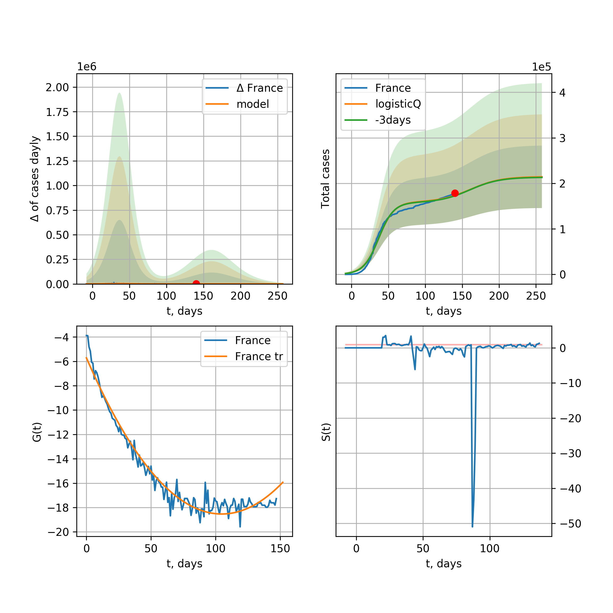
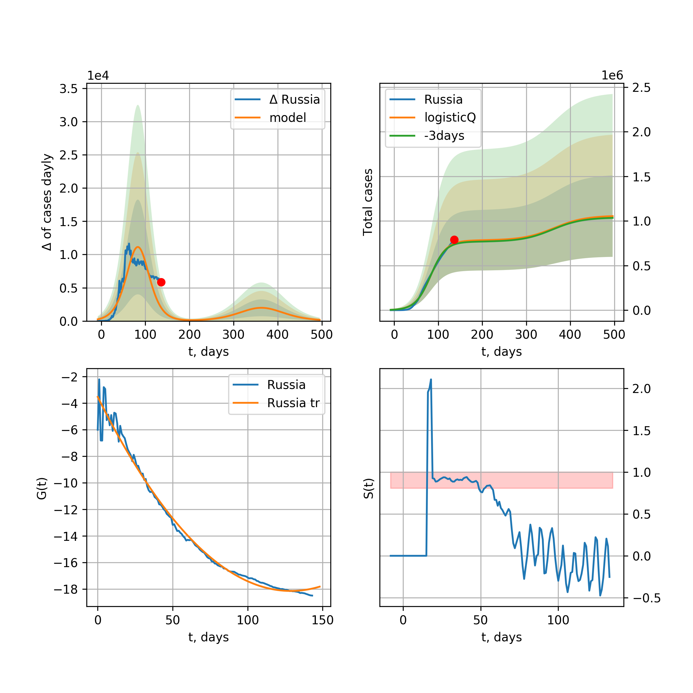
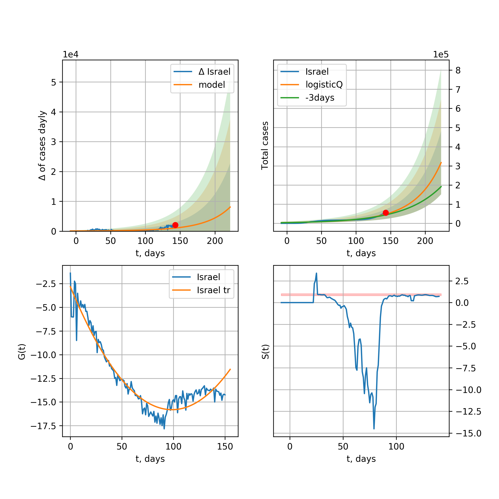
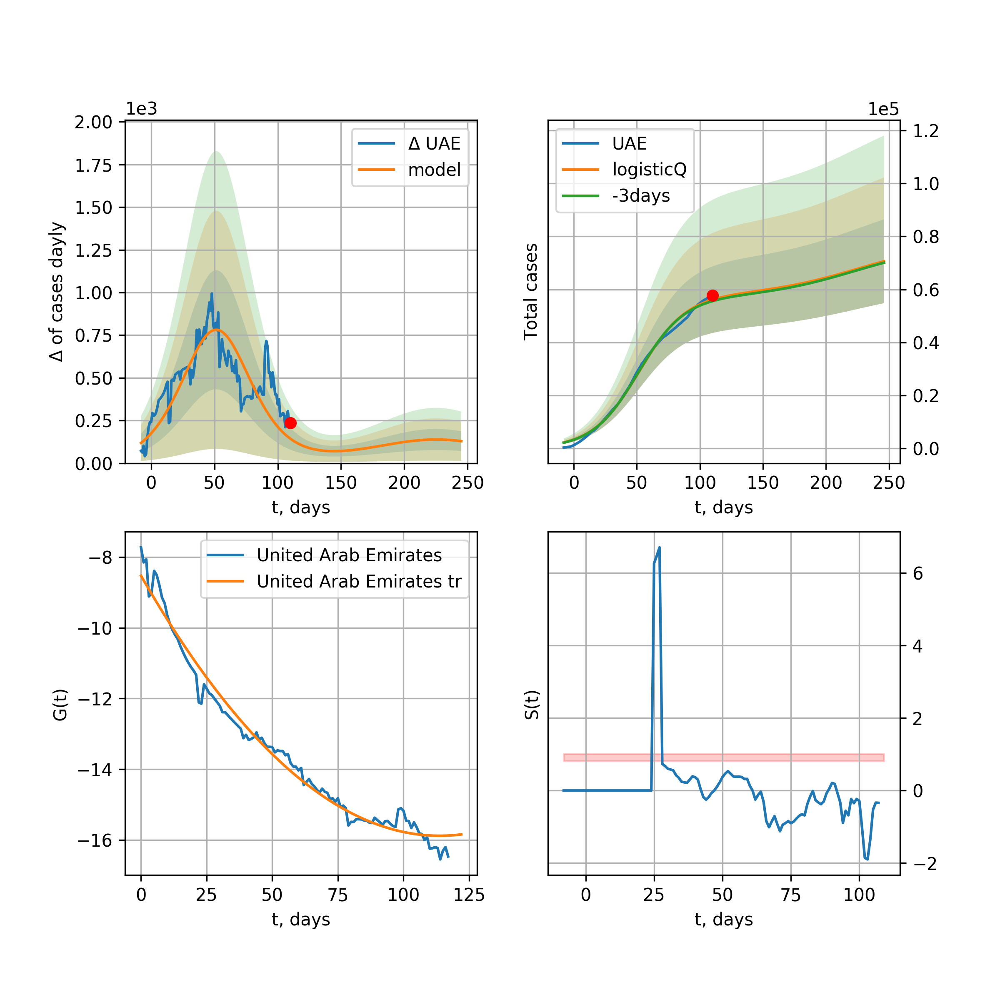
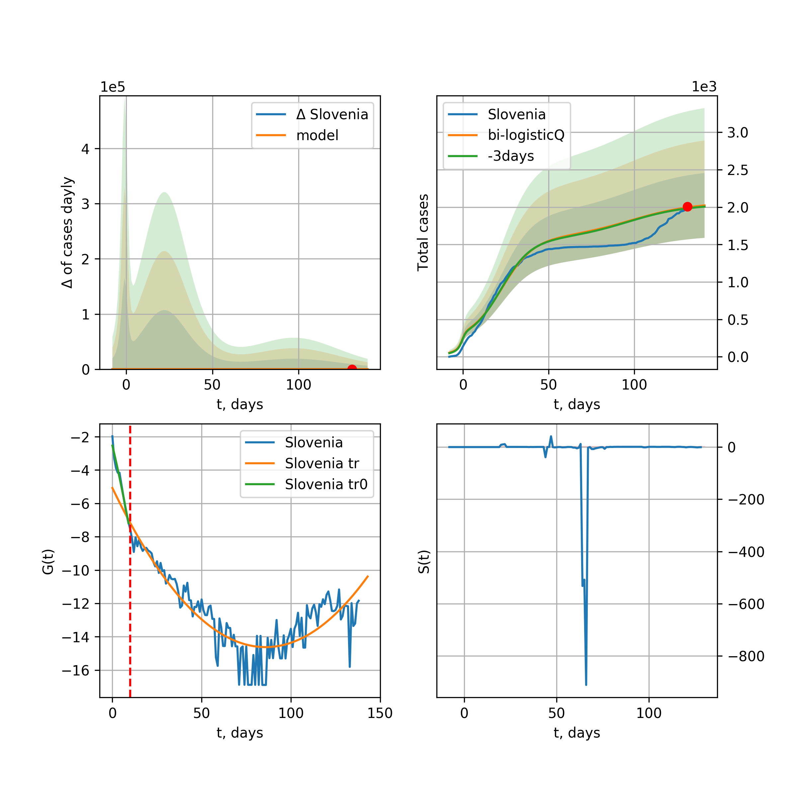

The number of COVID-19 cases \(K (t)\) after transformation is expressed as follows:
$$G(t)=\log{\dfrac{1}{K(t)^2}\dfrac{d K(t)}{d t}}=\log{\dfrac{k}{L}}-k(t-t_0)$$
was used to decide how many humps the model should have. It follows from a logistic function that describes the change in people infected with the virus and is expressed as:
$$K(t) = \dfrac{L}{1+e^{-k (t-t_0)}}=\dfrac{L}{2}+\dfrac{L}{2}\tanh{\dfrac{k(t-t_0)}{2}}$$
which is solution of the differential logistic growth equation
$$\frac{dK}{dt}=k K \left(1 - \frac{K}{L}\right)$$
where t0 is
$$t_0=\dfrac{1}{k}\log{\dfrac{L-K(0)}{K(0)}}$$
k is the exponential growth factor, and L is the quencher coefficient of growth and the lower it is, the faster the growth is extinguished.
In addition, Richards' growth function
$$R(t) = \dfrac{L}{\left(1+e^{-k \nu (t-t_0)}\right)^\frac{1}{\nu}}$$
were used. The following is the result of the world and some countries K (t) infected dynamics model and its comparison with observed experimentally observed results for the determination of parameters using the least squares method [4]:
$$ \min{\sum_{i=1}^{N}\left(K(t_i,a)-y_i\right)^2}$$
where K (t, a) is the selected or logistic function
$$K(t,a) = \dfrac{a_0}{1+e^{-a_1 (t-a_2)}}$$
or bi-logistic function [3]
$$K(t,a) = \dfrac{a_0}{1+e^{-a_1 (t-a_2)}}+\dfrac{a_3}{1+e^{-a_4 (t-a_5)}}$$
or a tri-logistic function
$$K(t,a) = \dfrac{a_0}{1+e^{-a_1 (t-a_2)}}+\dfrac{a_3}{1+e^{-a_4 (t-a_5)}}+\dfrac{a_6}{1+e^{-a_7 (t-a_8)}}$$
Finally, q-logistic and rq-logistic models replaced most of multy-logistic country models, where \(K_Q(t)=K((t-t_0)(t-t_1))\) and \(K_{RQ}(t)=R((t-t_0)(t-t_1))\) . The fourth graph shows the ratio
$$S(t)=\dfrac{K_a^\prime(t)}{K^\prime(t)}$$
where \(K_a(t)\) is the number of active cases, \(K(t)\) is the number total cases, after averaging those values for three days. This size in the rise stats in Korea and the world was about 1 and is currently 0.8 . In addition, standard deviation bands for model and model derivative for 1, 2 and 3 sigma, respectively, were added. The red dot in the graphs means the value of current today .
Obviously, the coefficient \(L\) indicates the country’s actions in actively disinfecting, and the coefficient k is proportional to the amount of social contacts. Therefore, the reduction or disinfection of the L factor, disinfection and disinfection again are on the agenda today.
It should be mentioned that it is only possible to say exactly what logistical growth rate COVID-19 develops after the end of the pandemic, but from the current point of view it can be seen that the model output can vary by several tens of percent to 2x, and the standard deviation of experimental data . However, there is another argument that leads to the assumption that it contains simple logistical dynamics. These are R (t) linear approximations fairly accurate for all countries and a coefficient of determination close to 0.9, and as the trend changes direction and this coefficient begins to decrease, the accuracy of the trend model increases again with the transition to a humpback graph. Therefore, the results of the simple multi-logistic function model will continue to be presented, bearing in mind that the predicted result is the lower limit of the possible scenarios.
Assuming that all countries choose a slow (Korean scenario) exit from quarantine, a second hump with coefficients of 'scenario' was added (without optimisation) to predict the results of the model.
World

{% include_relative _includes/covidcasesWorld35_Q.txt %}
European Union

{% include_relative _includes/covidcasesEuropean_Union35_Q.txt %}
USA

{% include_relative _includes/covidcasesUSA35_Q.txt %}
Spain

{% include_relative _includes/covidcasesSpain35_Q.txt %}
Italy

{% include_relative _includes/covidcasesItaly35_Q.txt %}
United Kingdom

{% include_relative _includes/covidcasesUnited_Kingdom35_Q.txt %}
France

{% include_relative _includes/covidcasesFrance35_Q.txt %}
Germany

{% include_relative _includes/covidcasesGermany35_Q.txt %}
Turkey

{% include_relative _includes/covidcasesTurkey35_Q.txt %}
Russia

{% include_relative _includes/covidcasesRussia35_Q.txt %}
Iran

{% include_relative _includes/covidcasesIran35_Q.txt %}
Brazil

{% include_relative _includes/covidcasesBrazil35_Q.txt %}
Canada

{% include_relative _includes/covidcasesCanada35_Q.txt %}
Belgium

{% include_relative _includes/covidcasesBelgium35_Q.txt %}
Peru

{% include_relative _includes/covidcasesPeru35_Q.txt %}
Netherlands

{% include_relative _includes/covidcasesNetherlands35_Q.txt %}
India

{% include_relative _includes/covidcasesIndia35_Q.txt %}
Switzerland

{% include_relative _includes/covidcasesSwitzerland35_Q.txt %}
Ecuador

{% include_relative _includes/covidcasesEcuador35_Q.txt %}
Portugal

{% include_relative _includes/covidcasesPortugal35_Q.txt %}
Saudi Arabia

{% include_relative _includes/covidcasesSaudi_Arabia35_Q.txt %}
Sweden

{% include_relative _includes/covidcasesSweden35_Q.txt %}
Ireland

{% include_relative _includes/covidcasesIreland35_Q.txt %}
Mexico

{% include_relative _includes/covidcasesMexico35_Q.txt %}
Singapore

{% include_relative _includes/covidcasesSingapore35_Q.txt %}
Chile

{% include_relative _includes/covidcasesChile35_Q.txt %}
Israel

{% include_relative _includes/covidcasesIsrael35_Q.txt %}
Austria

{% include_relative _includes/covidcasesAustria35_Q.txt %}
Belarus

{% include_relative _includes/covidcasesBelarus35_Q.txt %}
Japan

{% include_relative _includes/covidcasesJapan35_Q.txt %}
Qatar

{% include_relative _includes/covidcasesQatar35_Q.txt %}
Poland

{% include_relative _includes/covidcasesPoland35_Q.txt %}
UAE

{% include_relative _includes/covidcasesUAE35_Q.txt %}
Romania

{% include_relative _includes/covidcasesRomania35_Q.txt %}
Ukraine

{% include_relative _includes/covidcasesUkraine35_Q.txt %}
South_Korea

{% include_relative _includes/covidcasesSouth_Korea100_Q.txt %}
Indonesia

{% include_relative _includes/covidcasesIndonesia35_Q.txt %}
Denmark

{% include_relative _includes/covidcasesDenmark35_Q.txt %}
Serbia

{% include_relative _includes/covidcasesSerbia35_Q.txt %}
Philippines

{% include_relative _includes/covidcasesPhilippines35_Q.txt %}
Norway

{% include_relative _includes/covidcasesNorway35_Q.txt %}
Czechia

{% include_relative _includes/covidcasesCzechia35_Q.txt %}
Colombia

{% include_relative _includes/covidcasesColombia35_Q.txt %}
Australia

{% include_relative _includes/covidcasesAustralia35_Q.txt %}
Malaysia

{% include_relative _includes/covidcasesMalaysia35_Q.txt %}
Egypt

{% include_relative _includes/covidcasesEgypt35_Q.txt %}
Finland

{% include_relative _includes/covidcasesFinland35_Q.txt %}
Morocco

{% include_relative _includes/covidcasesMorocco35_Q.txt %}
Argentina

{% include_relative _includes/covidcasesArgentina35_Q.txt %}
Algeria

{% include_relative _includes/covidcasesAlgeria35_Q.txt %}
Luxembourg

{% include_relative _includes/covidcasesLuxembourg35_Q.txt %}
Thailand

{% include_relative _includes/covidcasesThailand35_Q.txt %}
Hungary

{% include_relative _includes/covidcasesHungary35_Q.txt %}
Greece

{% include_relative _includes/covidcasesGreece35_Q.txt %}
Iraq

{% include_relative _includes/covidcasesIraq35_Q.txt %}
Croatia

{% include_relative _includes/covidcasesCroatia35_Q.txt %}
Iceland

{% include_relative _includes/covidcasesIceland5_Q.txt %}
Estonia

{% include_relative _includes/covidcasesEstonia8_Q.txt %}
Bulgaria

{% include_relative _includes/covidcasesBulgaria35_Q.txt %}
New Zealand

{% include_relative _includes/covidcasesNew_Zealand35_Q.txt %}
Slovenia

{% include_relative _includes/covidcasesSlovenia35_Q.txt %}
Slovakia

{% include_relative _includes/covidcasesSlovakia35_Q.txt %}
Lithuania

{% include_relative _includes/covidcasesLithuania35_Q.txt %}
Latvia

{% include_relative _includes/covidcasesLatvia35_Q.txt %}
Cyprus

{% include_relative _includes/covidcasesCyprus35_Q.txt %}
Malta

{% include_relative _includes/covidcasesMalta100_R.txt %}
References
- Worldometers COVID-19 Coronavirus Pandemic
- Su COVID-19 susijusi gyventojų ir verslo statistika
- Bi-logistic growth
- Least squares
- scikit-learn
- scipy.org
- European Centre for Disease Prevention and Control An agency of the European Union
- Aaron Miller, Mac Josh Reandelar, Kimberly Fasciglione, Violeta Roumenova, Yan Li, Gonzalo H Otazu, Correlation between universal BCG vaccination policy and reduced morbidity and mortality for COVID-19: an epidemiological study, https://doi.org/10.1101/2020.03.24.20042937